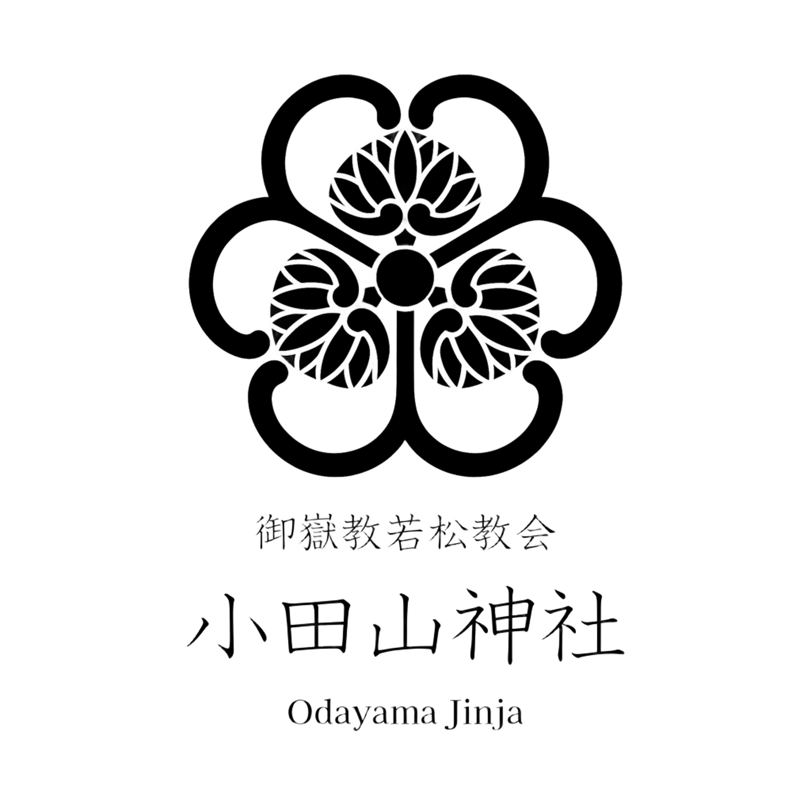
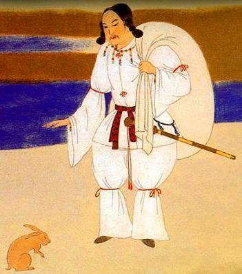
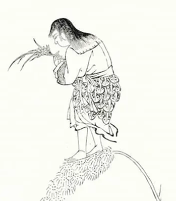
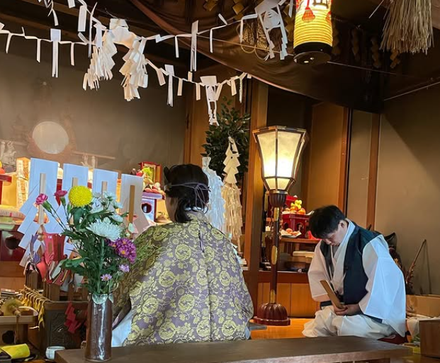
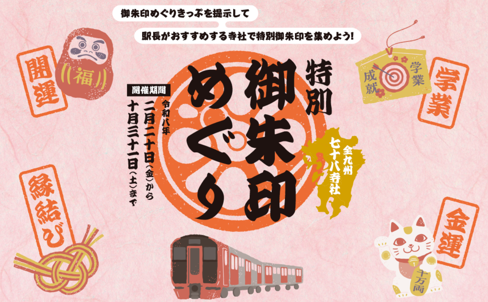
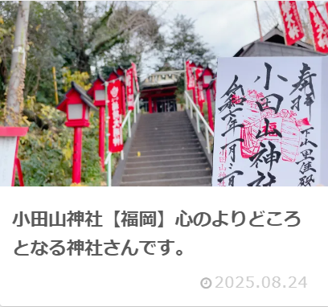
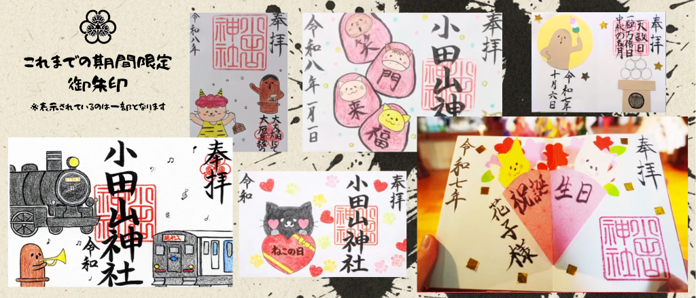

国常立尊 くにのとこたちのみこと
国常立尊は天地開闢のはじめに現れた国土生成の根源神でございます。 大地の基礎を固め、万物の安定と秩序を司り、国家安泰や家運隆昌、 人生の基盤を整える御神徳をお授けくださる神様として崇敬されています。

国常立尊は天地開闢のはじめに現れた国土生成の根源神でございます。 大地の基礎を固め、万物の安定と秩序を司り、国家安泰や家運隆昌、 人生の基盤を整える御神徳をお授けくださる神様として崇敬されています。

大己貴命は国造りを成し遂げ、人々の暮らしを豊かに導かれた大神です。 縁結び、商売繁盛、厄除開運など幅広い御神徳を持ち、 多くの人々のご縁と幸福を結ぶ神様として信仰されています。

少彦名命は医薬や知恵の神様として、人々に健康と癒しをもたらされました。 病気平癒、健康長寿、学業成就の御利益があり、 努力と智慧の大切さを教えてくださる神様です。
小田山神社（おだやまじんじゃ）は、北九州市若松区深町に鎮座する由緒ある神社でございます。
元々は現在の若松区原町付近に祀られていた稲荷社に遡ると伝えられ、
大正時代の道路拡張に伴い現所在地へ遷座いたしました。
社殿は小高い丘の上に位置し、参道を登ると若松の街並みや響灘を一望でき、
古くより地域の皆様の心のよりどころとして親しまれております。
当社では、木曾御嶽山を本山として崇敬する御嶽教の教えを基に、
恒例の祭典やイベントを通じて広く崇敬を集めております。
境内周辺には古墳群の史跡も存在し、若松地域の歴史と文化を今に伝えております。


JR九州 特別 九州御朱印巡り に当社も参加致しました‼
『九州御朱印巡り』様に当社を取り上げて頂きました‼
行事や季節の境内の様子、期間限定の御朱印については
公式Instagramにてご紹介しております。

ご参拝は年中可能ですが、御朱印につきましては午前10時～午後3時迄
御祈願につきましては事前に御連絡が必要となります
電話番号 093‐771‐4134
※不在に付、お電話に出られない場合がございます、ご了承くださいませ。
※年齢は数え年です
四季折々の祭事に、不定期ではございますがイベントを開催しております。
| 2026.02.03 | 節分・星祭り（限定御朱印頒布） |
| 2026.01.15 | どんど焼き |
| 2025.10.18 | 秋季大祭・七五三マルシェ（限定御朱印頒布） |
| 2025.10.06 | 中秋の名月「はにわ」御朱印頒布 |
| 2025.09.12 | ベビーマッサージ＆はいはいコンテスト |
| 2025.08.22 | 水あそび大会 |
| 2025.07.18 | 浴衣着付け体験＆撮影会 |
| 2025.06.30 | 夏越大祓式 |
| 2025.06.20 | なごみマルシェ・神社de写経 |
| 不定期 | コスプレイベント等も開催しております |
〒808‐0012
福岡県北九州市若松区深町1丁目17‐27
筑豊本線「若松駅」から徒歩約22〜25分（約1.8km）
※駅から神社までは住宅街・坂道を進むルートです。歩きやすい靴での移動をおすすめします
若松営業所などの北九州市営バス停から徒歩約数分圏内の場所あり
※最寄りバス停からの徒歩約距離・ルートはご利用の系統により異なります
専用駐車場につきましては、下記の動画をご確認ください
※神社向かって右手にございます